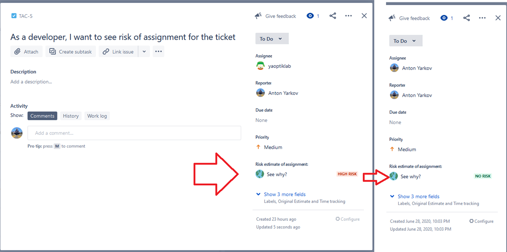
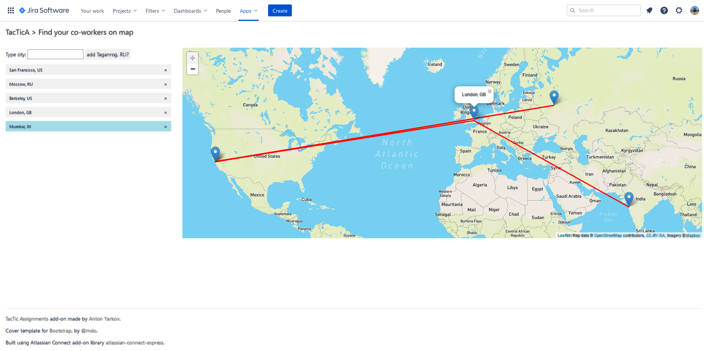

This JIRA addon allows teams distributed over the world to be more efficient by making work timelines of every JIRA issue more transparent to all colleagues. It uses current and historical information available in JIRA to predict when the assigned person most likely can start work on the subject.


What problem do we solve
Teams distributed over the world need appropriate tools for their work. Many companies use JIRA for task tracking. Team leads or product managers work with their teams from any locations in the world. Asynchronous communication available via tools like JIRA is essential to make these teams efficient.
However, when a team lead assigns a ticket to his colleague, he has a lack of feedback or response and not sure if it was set into the tasks queue or hanged without being noticed. I know that many people solve this by pinging each other in messengers or face-to-face communication to fulfill this gap. And developers know how destructive such distractions are.
One way to improve this situation is to give the team leads an appropriate tool to predict how assignments will work (or if it's not - why it's not working as expected).
I developed TacTic Assingments JIRA add-on as part of Atlassian Codegeist 2020 hackathon to allow teams that are distributed over the world to be more efficient by making work timelines of every JIRA issue more transparent to all colleagues.
It doesn’t replace direct communication, but it avoids wrong patterns of communications and fits distributed teams where it might be hard to communicate directly because of timezones. It might also fit for organizations that don’t have a lot of project managers to track people’s load. Most organizations that I know are eager to constant progress, want their teams to work like a Clock’s (tick tack tick tack) and to avoid overload, stress, and tons of meetings. This TacTic Assignments add-on brings that into life.

Prioritize work based on knowledge instead of guesses.
Basically, TacTic Assingments add-on estimates the risks of every ticket assignment that you make. But it's more appropriate to be used for the tasks that you expect to be executed urgently or really soon. It uses current information available in JIRA (work in progress already assigned, timezones, etc.) to predict when the assigned person most likely can start work on the subject.
It all starts with knowing the ticket number and assignee. Then this tool will automatically compare the assignee and your timezones and show the difference.
It will also check the amount of work in progress for this person to consider his current load.
It will ensure that the item you have just assigned to a colleague has the best potential to be executed soon. Otherwise, it will raise a red status to let you know about the risks!
How to use
1. Go to your Atlassian JIRA Project > select Apps > select Upload App
2. Type in URL https://tacticaddon.herokuapp.com and click "Upload"
3. After installation completed you will notice 2 things:
- While looking to any JIRA Issue (ticket) find a clickable field (called "glance" in JIRA vocabulary) "Risk estimate of assignment:" with Globus icon and associated "level of risk".
- "TacTicA map" menu item under global Apps menu
Try some straightforward use cases:
Case 1:
- Open any JIRA issue
- Click on "See why?" under "Risk estimate of assignment:"
- See a little page with details about the associated risks: your and your teammate timezones, timezone differences and amount of issues in progress.
Case 2:
- Open "TacTicA map" from the global Apps menu
- See the list of cities/timezones together with appropriate points on the map.
- This will allow you to visualize the presence of your team in the world.
More Details
Technologies used
Front-End part (actual JIRA add-on) is built with native JavaScript and using Atlassian Connect add-on library atlassian-connect-express.
Back-end API is built with .NET Core 3.1, C#, Docker and AWS platform (ECS, Fargate, EC2, Route53 etc.).
External API's used:
- GeoNames API for geocoding and timezones
- IpInfoDb service for finding IP address of the client
Author
Credits to
Atlassian Codegeist 2020 hackathon for motivating me to work on this.
Atlassian Developers community for the information and docs.
Jet Brains .NET Days Online 2020 for sharing knowledge about Rider IDE.
A Cloud Gurus for online courses about AWS platform.